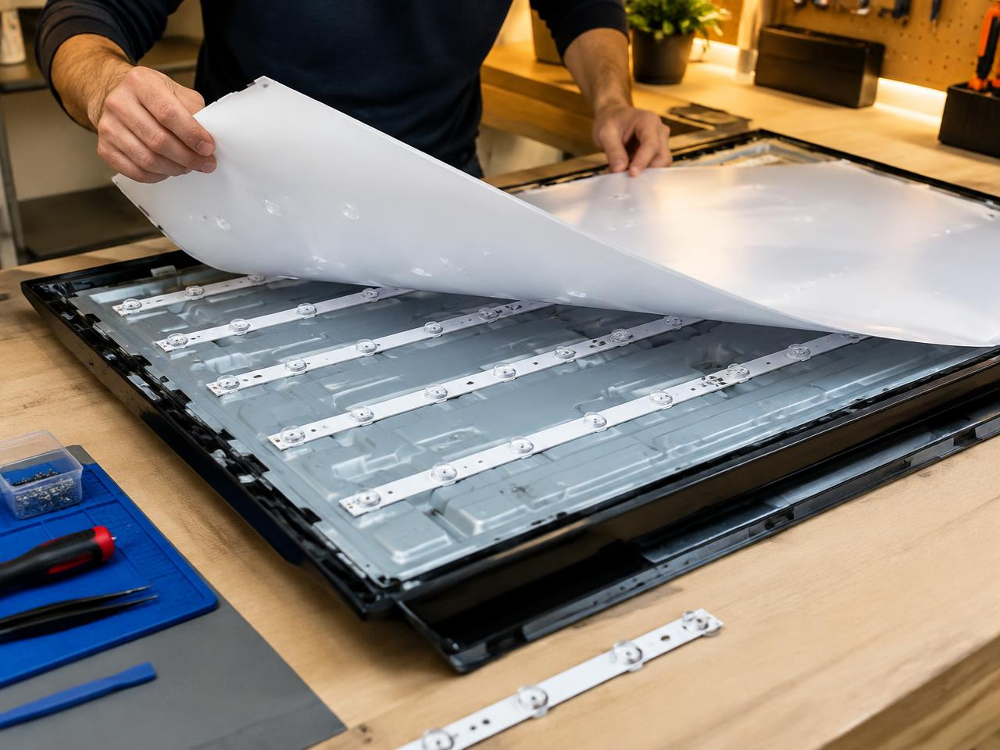
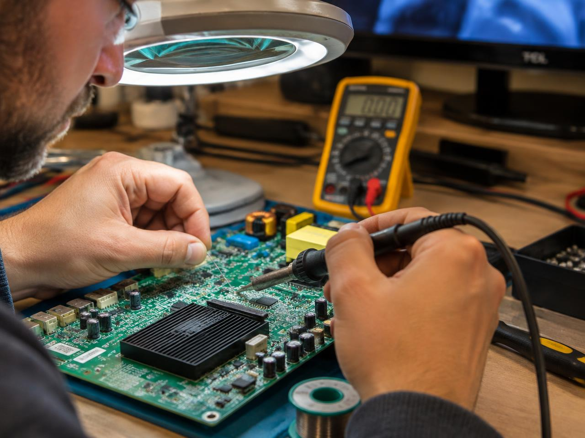
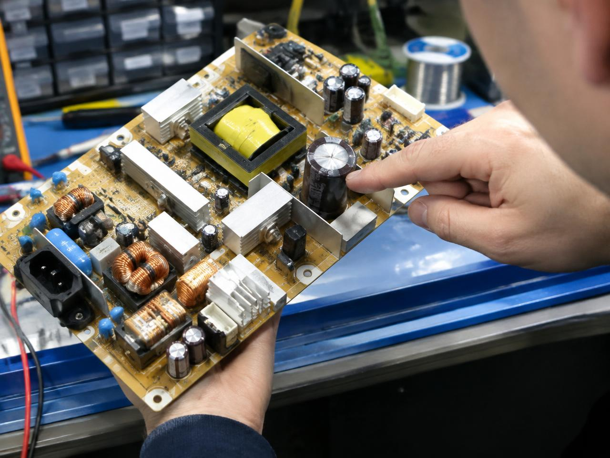
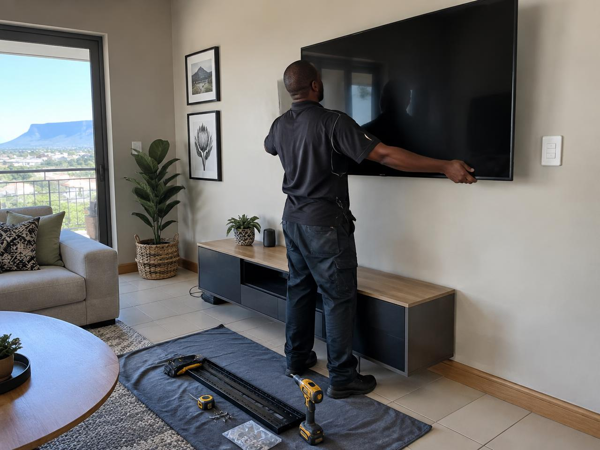
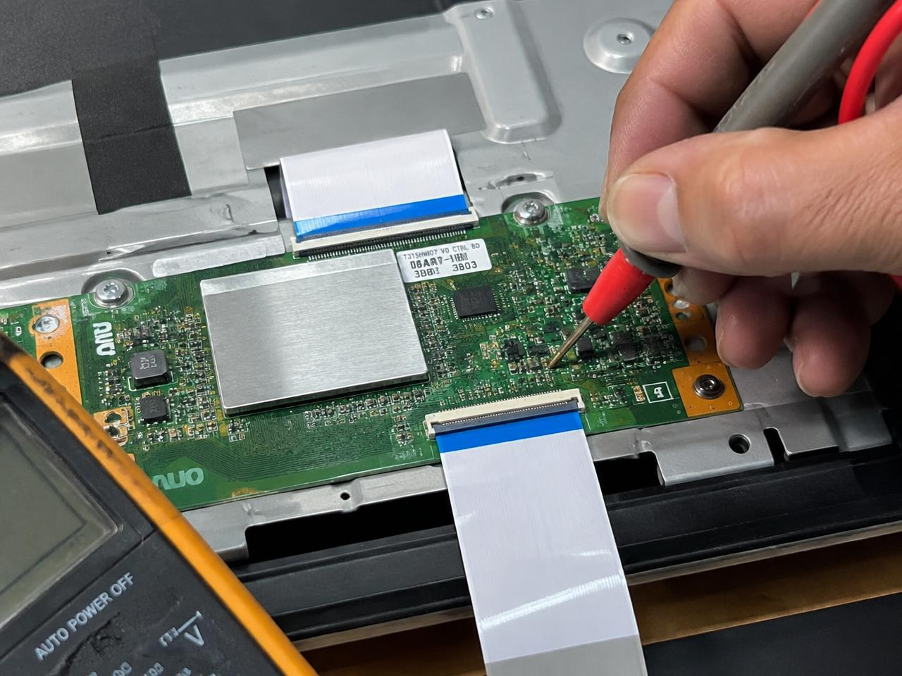
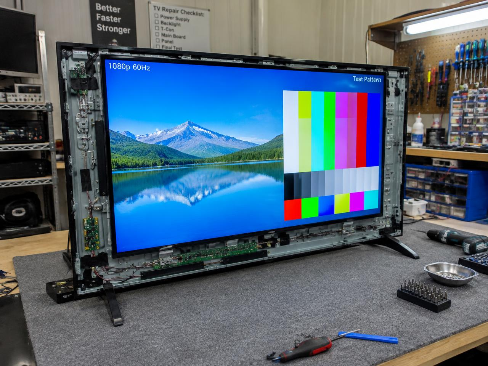
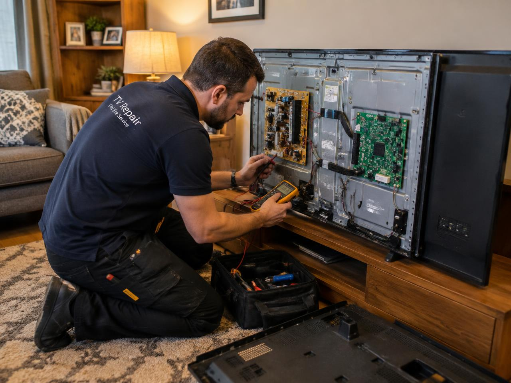

Power problems
For TVs that will not switch on, keep restarting, or show signs of a faulty power board.
Expert fault finding, repairs and installations at your home. We diagnose the problem first, then help you choose the most sensible next step.
We come to you
Home visits across Gauteng
Find the real cause
Explain your options
Restore when practical
What we repair
From a TV that will not power up to a picture that has gone dim, our mobile service brings careful diagnostics and practical repairs to your door.
For TVs that will not switch on, keep restarting, or show signs of a faulty power board.
Diagnosis and repair for no sound, distorted audio, intermittent sound, and faulty speakers.
Lines, flickering, dark pictures, colour issues, and other display faults professionally assessed.
Faulty LED strips and backlight components replaced to restore brightness and clarity.
Power boards, main boards, T-Con boards and related components repaired or replaced.
Wall mounting and neat connection of decoders, soundbars, consoles and other devices.
A careful inspection to identify the fault and estimate the most practical repair route.
Faulty TVs may be assessed for purchase, repair and responsible return to use.







From recent call-outs across Gauteng
Projects
A snapshot of recent jobs — from backlight and board repairs to installations and refurbished sets. Every project starts with a diagnosis and an honest quote.
Picture had gone dim. Failed LED strips replaced and full brightness restored.
Intermittent shutdown traced to dry joints on the main board and re-soldered.
Checking the display control board for faults affecting picture quality.
Bulged capacitors found and replaced after the set would not switch on.
TV bracketed level, cables tidied and decoder, soundbar and console connected.
Faulty set repaired, burn-in tested with a full test pattern and resold responsibly.
Customer reviews
Feedback from TV owners across Gauteng. Had your TV repaired by Softline? We would love to hear from you too.
“My TV would not switch on at all. The technician came to my house, found the fault on the power board and had it working the same visit. Honest pricing too.”
“The picture on my 55-inch had gone very dim. They replaced the backlight strips and it looks brand new again. Saved me from buying a new TV.”
“Professional from the first WhatsApp message. The fault was explained clearly before any work started. Sound is back and working perfectly.”
“They mounted my TV neatly, connected the decoder and soundbar, and tidied every cable. Quick, friendly and very neat work.”
“Lines across my picture had me worried about an expensive panel. They diagnosed the real fault and repaired the board instead. Fair quote, great service.”
Simple process
Tell us the TV brand, size and symptoms. Photos or a short video can help.
A mobile technician comes to your location anywhere in Gauteng to inspect the TV.
We explain the fault and the practical repair options before work proceeds.
Home call-outs make TV repairs easier. Contact us with your location and fault details to arrange a visit.